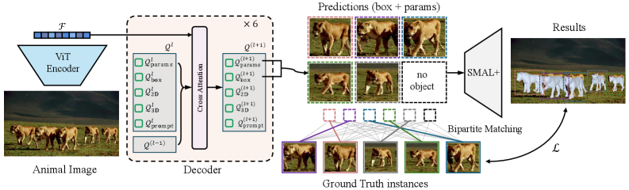
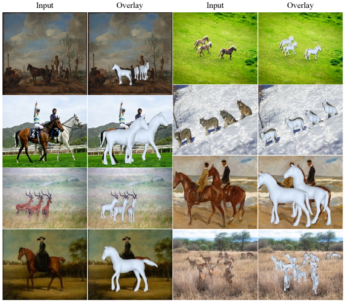
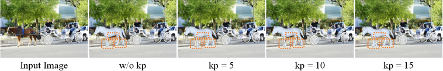
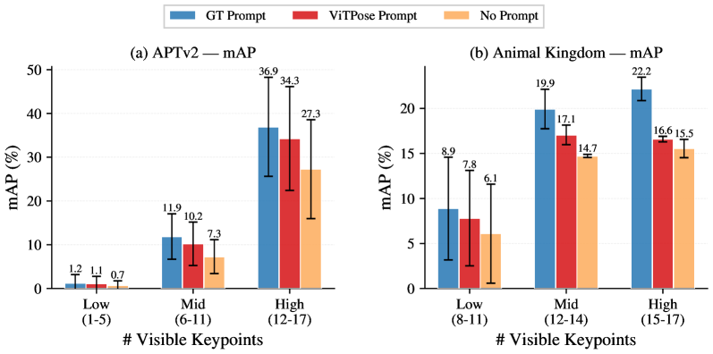
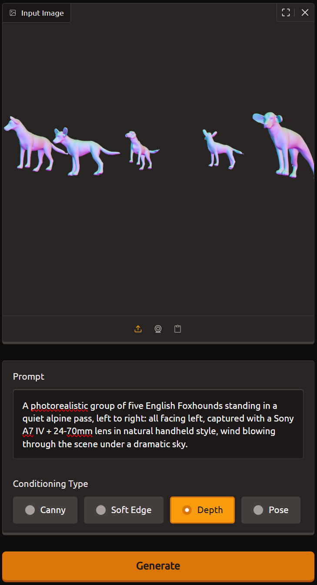
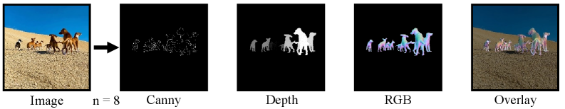
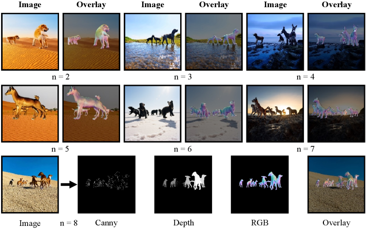
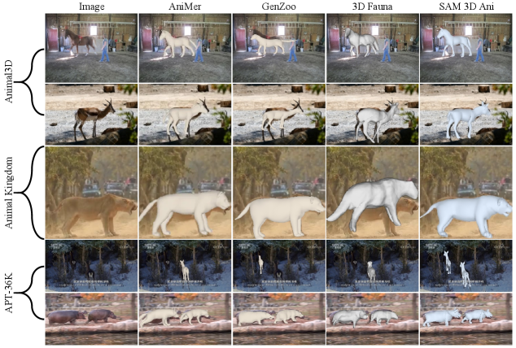
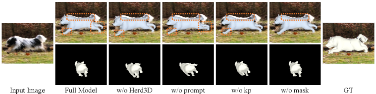

3D animal reconstruction in the wild remains challenging due to large species variation, frequent occlusions, and the prevalence of multi-animal scenes, while existing methods predominantly focus on single-animal settings. We present SAM 3D Animal, the first promptable framework for multi-animal 3D reconstruction from a single image. Built on the SMAL+ parametric animal model, our method jointly reconstructs multiple instances and supports flexible prompts in the form of keypoints and masks which enable more reliable disambiguation in crowded and occluded scenes. To train such a model, we further introduce Herd3D, a multi-animal 3D dataset containing over 5K images, designed to increase diversity in species, interactions, and occlusion patterns. Experiments on the Animal3D, APTv2, and Animal Kingdom datasets show that our framework achieves state-of-the-art results over both existing model-based and model-free methods, demonstrating a scalable and effective solution for prompt-driven animal 3D reconstruction in the wild.

Given a full image, SAM 3D Animal uses a ViT-Huge encoder to extract visual tokens and a SAM-style promptable Transformer decoder to predict SMAL+ shape, pose, camera, and bounding boxes for every animal instance. Unlike SAM 3D Body, which reconstructs one prompted human per forward pass, our model adopts a set-prediction paradigm with DETR-style bipartite matching and predicts up to P = 30 animals at once. Optional keypoint prompts provide skeletal alignment cues, while mask prompts sharpen silhouette discrimination when animals overlap.
From a single uncropped photograph containing herds, packs, or interacting groups, SAM 3D Animal outputs articulated SMAL+ meshes for all visible animals. The model handles diverse species—including horses, dogs, antelopes, wolves, cats, and sheep—and remains robust under heavy mutual occlusion.

Qualitative results on challenging multi-animal scenes with input images and overlay reconstructions.
SAM 3D Animal supports two complementary prompt modalities inspired by promptable human mesh recovery:
Even without prompts, the model already achieves competitive performance. With prompts, accuracy improves consistently across Animal3D, APTv2, and Animal Kingdom—including up to 54% AP and 80% mAP gains on Animal Kingdom over the strongest baseline, and 5.2 PA-MPJPE improvement on Animal3D. Ablation studies show that keypoint prompts are the dominant contributor, with performance scaling monotonically as more keypoints are provided.


Training multi-instance 3D reconstruction from 2D-only annotations is insufficient for resolving inter-animal occlusions. We introduce Herd3D, a multi-animal 3D dataset with more than 5K images and per-instance ground-truth SMAL+ meshes. Building on GenZoo, we adapt the pipeline for multi-animal generation: up to 8 animals are placed on a shared ground plane with controlled layout, expanded pose diversity from Animal3D, and a two-stage Qwen3-VL-8B-Instruct prompting scheme that first predicts per-animal facing directions from the RGB render and then composes a coherent final prompt for Qwen-Image-ControlNet-Union synthesis. Each 1024×1024 image includes SMAL+ parameters, 2D/3D keypoints, and bounding boxes.

Qwen3-VL prompting
Qwen-ControlNet
Synthetic image


We compare against state-of-the-art model-based and model-free animal mesh recovery methods on Animal3D, APTv2, and Animal Kingdom. SAM 3D Animal consistently produces more accurate poses and shapes in both single-animal and multi-animal settings. Ablations confirm that Herd3D pre-training, keypoint prompting, and mask prompting each contribute to the final performance.


@article{hu2026sam3danimal,
title = {SAM 3D Animal: Promptable Animal 3D Reconstruction from Images in the Wild},
author = {Hu, Xuyi and Lyu, Jin and Liu, Jiuming and Liu, Yebin and Zuffi, Silvia and An, Liang and Goetz, Stefan},
journal = {arXiv preprint arXiv:2605.07604},
year = {2026}
}